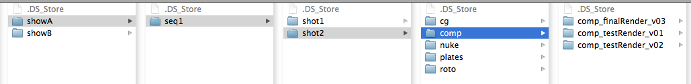
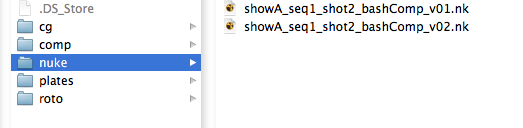
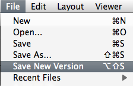
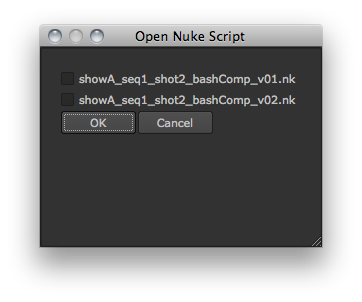
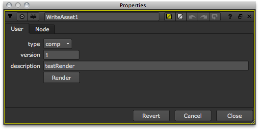
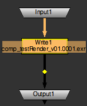
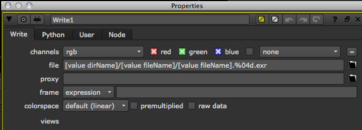
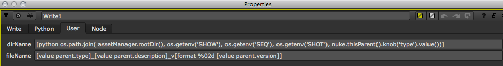
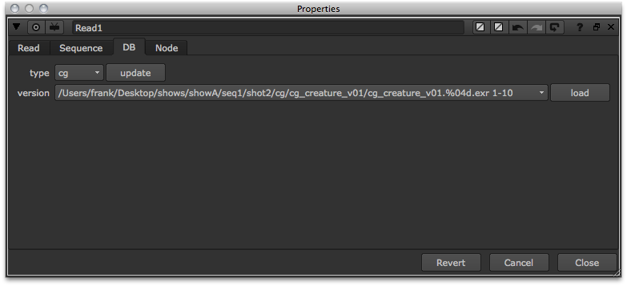

There are many different ways to hook an asset management system into NUKE. This section outlines one of the many possible ways you could do it and shows some general ideas for pipeline integration. To simplify and to be more generic, the database in this example is replaced by a simple directory structure that we parse based on a given naming convention. All the code in this example that takes care of parsing the structure and creating new tools is saved into a module called assetManager. Other snippets are then placed in the menu.py file to create menus, hotkeys, favorites, and so on, and open panels. Therefore, you should make sure to import assetManager in your menu.py to make the new code available.
Here is the directory structure we will be using for the example:
Most facilities use environment variables to identify which shot a user is working on and adjust the workflow to streamline it accordingly. Every facility will have their own toolset to let the artist set the show environment in some way. For simplicity’s sake, we will just set the variables SHOW, SEQ, and SHOT to an existing shot in our directory structure:
# SET UP EXAMPLE ENVIRONMENT
os.environ['SHOW'] = 'showA'
os.environ['SEQ'] = 'seq1'
os.environ['SHOT'] = 'shot2'
Note
You could also set user knobs in the NUKE root to hold these values.
Define a convenience function that controls the root directory where all the show directories live in. We will have to construct some file paths with this in a bit:
# DEFINE FACILITY ROOT
def rootDir():
return '/Users/frank/Desktop/shows'
With the environment variables set and rootDir in place, we can now write all sorts of functions to find the current shot’s directories for input and output. Let’s write a function to get the current shot’s NUKE script directory by simply joining the root with the values from the environment variable in the fashion that our directory structure dictates:
# DEFINE SHOT'S NUKE DIR
def nukeDir():
nkDir = os.path.join( rootDir(), os.getenv('SHOW'), os.getenv('SEQ'), os.getenv('SHOT'), 'nuke' )
if not os.path.isdir( nkDir ):
raise ValueError, 'NUKE directory does not exist'
return nkDir
This returns the location of the current shot’s NUKE directory. This is handy for setting dynamic File Browser favorites in the menu.py based on the current shot environment:
# SET FILE BROWSER FAVORITES
nuke.addFavoriteDir(
name = 'NUKE SCRIPTS',
directory = assetManager.nukeDir(),
type = nuke.SCRIPT)
Note
Don’t forget to import the module that holds the function/method at the top of the menu.py. In this example, all the pipeline code lives in a module called assetManager.
With the above nukeDir() function available, we can now write an easySave function that saves the NUKE script for the user without having to browse the directory structure or worry about naming conventions:
def easySave():
nkDir = nukeDir()
Let the user input a description for the NUKE script we are about to save. Give it a useful default value:
# GET DESCRIPTION FROM USER BUT STRIP ALL WHITE SPACES
description = nuke.getInput( 'script description', 'bashComp' ).replace( ' ', '' )
With the NUKE directory and the user description available, we can now attach a version to the file name and construct the naming convention we would like. In this example, we use the show, sequence, and shot names in the file followed by the user description and the version:
Here is the easySave function, which constructs the above naming. It starts with version 1, checks if the file already exists, and if it does, versions it up:
def easySave():
nkDir = nukeDir()
# GET DESCRIPTION FROM USER BUT STRIP ALL WHITE SPACES
description = nuke.getInput( 'script description', 'bashComp' ).replace( ' ', '' )
fileSaved = False
version = 1
while not fileSaved:
# CONSTRUCT FILE NAME
nkName = '%s_%s_%s_%s_v%02d.nk' % ( os.getenv( 'SHOW'), os.getenv( 'SEQ'), os.getenv( 'SHOT'), description, version )
# JOIN DIRECTORY AND NAME TO FORM FULL FILE PATH
nkPath = os.path.join( nkDir, nkName )
# IF FILE EXISTS VERSION UP
if os.path.isfile( nkPath ):
version += 1
continue
# SAVE NUKE SCRIPT
nuke.scriptSaveAs( nkPath )
fileSaved = True
return nkPath
This can now be used for saving the first NUKE script and since the script name generated by easySave works with NUKE’s default versioning tools, every subsequent version can be saved by just using the **File > Save new version* option:
To make this function available to the user, you need to put it into a menu in NUKE. Let’s put it into a custom menu that is labelled based on the current shot environment, so we can actually see which shot environment the current NUKE session is set to:
# ADD EASY SAVE TO SHOT MENU
shotMenu = '%s - %s' % ( os.getenv( 'SEQ' ), os.getenv('SHOT') )
nuke.menu( 'Nuke' ).addCommand( shotMenu+'/Easy Save', assetManager.easySave )
To make sure no NUKE scripts are saved without a version number (if the user chooses to bypass easySave), you can write a function that checks the script name and raises an error if it’s not what you want it to be. This snippet checks if there is a lower or upper case “v” in the file name, followed by at least one digit. If not, it raises an error:
# CHECK FOR VERSION IN SCRIPT NAME
def checkScriptName():
if not re.search( r'[vV]\d+', nuke.root().name() ):
raise NameError, 'Please include a version number and save script again.'
Hook this up to a callback that is run when the user tries to save a script. This is probably best placed in the menu.py file:
nuke.addOnScriptSave( assetManager.checkScriptName )
Because the checkScriptName function raises an error if the script name does not comply with the naming convention, it interrupts the saving process and the user is forced to enter a version number before they can save their script. Here are some other scenarios where this callback can help:
Now let’s look at facilitating the loading of scripts as well by using a custom panel that shows all scripts in the current shot’s “nuke” directory. First, write a function that returns all NUKE scripts based on our directory structure. We can just glob the output of nukeDir() for that:
# GET ALL NUKE SCRIPTS FOR CURRENT SHOT
def getNukeScripts():
nkFiles = glob( os.path.join( nukeDir(), '*.nk' ) )
return nkFiles
Write a panel that shows a checkbox for each NUKE script found:
# PANEL TO SHOW NUKE SCRIPS FOR CURRENT SHOT
class NkPanel( nukescripts.PythonPanel ):
def __init__( self, nkScripts ):
nukescripts.PythonPanel.__init__( self, 'Open NUKE Script' )
self.checkboxes = []
self.nkScripts = nkScripts
for i, n in enumerate( self.nkScripts ):
# PUT INDEX INTO KNOB NAMES SO WE CAN IDENTIFY THEM LATER
k = nuke.Boolean_Knob( 'nk_%s' % i, os.path.basename( n ) )
self.addKnob( k )
k.setFlag( nuke.STARTLINE )
self.checkboxes.append( k )
Ideally, we’d use radio buttons to let the user select a script, but since NUKE doesn’t have those yet, let’s hook up a knobChanged callback that makes sure that only one checkbox is checked at a time:
def knobChanged( self, knob ):
if knob in self.checkboxes:
# MAKE SURE ONLY ONE KNOB IS CHECKED
for cb in self.checkboxes:
if knob == cb:
# EXTRACT THE INDEX FORM THE NAME AGAIN
index = int( knob.name().split('_')[-1] )
self.selectedScript = self.nkScripts[ index ]
continue
cb.setValue( False )
Here is the complete panel code:
class NkPanel( nukescripts.PythonPanel ):
def __init__( self, nkScripts ):
nukescripts.PythonPanel.__init__( self, 'Open NUKE Script' )
self.checkboxes = []
self.nkScripts = nkScripts
self.selectedScript = ''
for i, n in enumerate( self.nkScripts ):
# PUT INDEX INTO KNOB NAMES SO WE CAN IDENTIFY THEM LATER
k = nuke.Boolean_Knob( 'nk_%s' % i, os.path.basename( n ) )
self.addKnob( k )
k.setFlag( nuke.STARTLINE )
self.checkboxes.append( k )
def knobChanged( self, knob ):
if knob in self.checkboxes:
# MAKE SURE ONLY ONE KNOB IS CHECKED
for cb in self.checkboxes:
if knob == cb:
# EXTRACT THE INDEX FORM THE NAME AGAIN
index = int( knob.name().split('_')[-1] )
self.selectedScript = self.nkScripts[ index ]
continue
cb.setValue( False )
Note
See Custom Panels for more information on custom panels.
With the panel code in place, create a helper function (in your menu.py) that opens the panel and checks its return value, then opens the requested script if appropriate:
# HELPER FUNCTION FOR NUKE SCRIPT PANEL
def nkPanelHelper():
# GET ALL NUKE SCRIPTS FOR CURRENT SHOT
nkScripts = assetManager.getNukeScripts()
if not nkScripts:
# IF THERE ARE NONE DON'T DO ANYTHING
return
# CREATE PANEL
p = assetManager.NkPanel( nkScripts )
# ADJUST SIZE
p.setMinimumSize( 200, 200 )
# IF PANEL WAS CONFIRMED AND A NUKE SCRIPT WAS SELECTED, OPEN IT
if p.showModalDialog():
if p.selectedScript:
nuke.scriptOpen( p.selectedScript )
Running this function produces the following panel:
If you want to run this function automatically whenever a new NUKE session is launched, you can use the following callback in your menu.py:
nuke.addOnUserCreate( nkPanelHelper, nodeClass='Root')
Now when an artist launches NUKE in a shot environment, they are presented with the available NUKE scripts they can open. If they want to start a new script, they can simply cancel the panel.
You can also experiment with adding controls to the panel to show more information (such as the modified date for each file) and activating the most recently used script by default.
Many facilities use custom Write gizmos or a modified version of the Write node to ensure artists follow the facility’s naming conventions and use an appropriate directory structure. If done right, this minimizes the potential for human error when files are rendered and streamlines the artists’ workflow. Let’s have a look at a simple example gizmo:
This is just a single Write node hooked up to the gizmo’s properties panel using Python and TCL expressions. The artist only has to select the type of render they are about to produce (which will determine the target directory), assign a version number and a description (which are then used to build the correct file name), and hit Render. Let’s have a look at the internals:
The value for the file control is constructed by joining the values of two user knobs and appending the extension ”.exr” (in this example, we always render exr files).
The two user knobs dirName and fileName are just there as temporary variables, so we don’t have to squeeze all code into the file control:
The dirName just constructs the directory path by joining the root directory with the environment variables and the value of the type knob:
os.path.join( assetManager.rootDir(), os.getenv('SHOW'), os.getenv('SEQ'), os.getenv('SHOT'), nuke.thisParent().knob('type').value())
The fileName actually uses TCL syntax to build the file name. In this case, TCL is much simpler than Python:
[value parent.type]_[value parent.description]_v[format %02d [value parent.version]]
If you did want to use Python code, this is what it would look like:
[ python '%s_%s_v%02d' % ( nuke.thisParent().knob('type').value(), nuke.thisParent().knob('description').value(), nuke.thisParent().knob('version').value() )]
Sometimes good ol’ TCL isn’t so bad.
Once this is saved as a gizmo called WriteAsset, you even get the benefits of NUKE’s auto labelling for free. Because the node class starts with “Write”, NUKE automatically displays the file name in the Node Graph.
Note
See autolabel for information on customizing this.
In your menu.py, hook up the new gizmo to the Image menu in the toolbar and assign it to the “w” hotkey:
nuke.menu( 'Nodes' ).addCommand( 'Image/WriteAsset', lambda: nuke.createNode( 'WriteAsset' ), 'w' )
In order for the new gizmo to work nicely, you have to automatically create the output directory if it doesn’t exist. Here is a code snippet that does that for you:
def createOutDirs():
trgDir = os.path.dirname( nuke.filename( nuke.thisNode() ) )
if not os.path.isdir( trgDir ):
os.makedirs( trgDir )
You can make sure this code runs before a render in two ways: as a global callback or by putting it into the Write node’s beforeRender knob. To assign a global callback, you can place something like the following line in your menu.py:
nuke.addBeforeRender( assetManager.createOutDirs, nodeClass='Write' )
This keeps the beforeRender knob clear and enforces the use of the script whenever a Write node is rendered, but has the disadvantage of being harder to get rid of should something go wrong.
To use the Write node’s beforeRender knob, simply assign a knob default to it in your menu.py:
nuke.knobDefault( 'Write.beforeRender', 'assetManager.createOutDirs()')
This means the user can get rid of the callback very easily if they want to bypass the pipeline, which can be a good thing if things go wrong unexpectedly. When it comes to essential functions like rendering, I personally prefer to keep things transparent to the user and would use the knob default approach.
If you do so, be aware that you have to manually add this to the already existing Write node inside your WriteAsset gizmo, as knob defaults have no effect on existing nodes. Make sure you don’t use both the knob and the callback as that would run the script twice, which is asking for trouble.
Remember that there are many more callbacks to utilize in order to integrate NUKE into your pipeline. For example:
See Callbacks for more inspiration.
Now that the rendering is taken care of, let’s customize the Read node to facilitate loading images from the database/directory structure.
To do this, we create custom knobs in the default Read node to make it look like this:
To be able to do this, we first need to write a function that parses the directory structure for all the rendered versions. In real life, this would probably be a database call to get all published image sequences. We also need a function that does some sequence detection for us, but first things first, here is a simplified snippet that loops through the render directories and feeds all the sub-directories to the getFileSeq function to get the sequence string as seen in the version knob in the above screenshot:
def getVersions():
'''Return a dictionary of rendered versions per type'''
# DEFINE THE DIRECTORIES YOU WANT TO INCLUDE
types = [ 'plates', 'cg', 'comp', 'roto' ]
# INITIALISE THE DICTIONARY WE WILL RETURN AT THE END OF THE FUNCTION
versionDict = {}
# GET THE DIRECTORY BASED ON THE CURRENT SHOT ENVIRONMENT
shotDir = os.path.join( rootDir(), os.getenv('SHOW'), os.getenv('SEQ'), os.getenv('SHOT') )
# LOOP THROUGH THE FOLDERS INSIDE THE SHOT DIRECTORY AND COLLECT THE IMAGE SEQUENCES THEY CONTAIN
for t in types:
versionDict[t] = [] # THIS WILL HOLD THE FOUND SEQUENCES
typeDir = os.path.join( shotDir, t ) # GET THE CURRENT DIRECTORY PATH
for d in os.listdir( typeDir ): # LOOP THROUGH IT'S CONTENTS
path = os.path.join( typeDir, d)
if os.path.isdir( path ): # LOOP THROUGH SUB DIRECTORIES
versionDict[t].append( getFileSeq( path ) ) # RUN THE getFileSeq() FUNCTION AND APPEND IT'S OUTPUT TO THE LIST
return versionDict
And here is the getFileSeq function that returns the sequence notation for each sub-directory’s image sequence.
Note
This is only a simplified example that would be replaced by database queries in real life.
def getFileSeq( dirPath ):
'''Return file sequence with same name as the parent directory. Very loose example!!'''
dirName = os.path.basename( dirPath )
# COLLECT ALL FILES IN THE DIRECTORY THAT HVE THE SAME NAME AS THE DIRECTORY
files = glob( os.path.join( dirPath, '%s.*.*' % dirName ) )
# GRAB THE RIGHT MOST DIGIT IN THE FIRST FRAME'S FILE NAME
firstString = re.findall( r'\d+', files[0] )[-1]
# GET THE PADDING FROM THE AMOUNT OF DIGITS
padding = len( firstString )
# CREATE PADDING STRING FRO SEQUENCE NOTATION
paddingString = '%02s' % padding
# CONVERT TO INTEGER
first = int( firstString )
# GET LAST FRAME
last = int( re.findall( r'\d+', files[-1] )[-1] )
# GET EXTENSION
ext = os.path.splitext( files[0] )[-1]
# BUILD SEQUENCE NOTATION
fileName = '%s.%%%sd%s %s-%s' % ( dirName, str(padding).zfill(2), ext, first, last )
# RETURN FULL PATH AS SEQUENCE NOTATION
return os.path.join( dirPath, fileName )
So with code like the above and/or appropriate database queries, we can now get a dictionary that holds all versions per type/directory:
getVersions()
# Result:
{'plates': ['/Users/frank/Desktop/shows/showA/seq1/shot2/plates/plateA/plateA.%06d.exr 1-10'], 'cg': ['/Users/frank/Desktop/shows/showA/seq1/shot2/cg/cg_creature_v01/cg_creature_v01.%04d.exr 1-10', '/Users/frank/Desktop/shows/showA/seq1/shot2/cg/cg_creature_v02/cg_creature_v02.%04d.exr 1-10', '/Users/frank/Desktop/shows/showA/seq1/shot2/cg/cg_particleTest_v01/cg_particleTest_v01.%04d.exr 1-10'], 'roto': ['/Users/frank/Desktop/shows/showA/seq1/shot2/roto/roto_gMask_v01/roto_gMask_v01.%04d.exr 1-10', '/Users/frank/Desktop/shows/showA/seq1/shot2/roto/roto_tightRoto_v01/roto_tightRoto_v01.%04d.exr 1-10'], 'comp': ['/Users/frank/Desktop/shows/showA/seq1/shot2/comp/comp_finalRender_v03/comp_finalRender_v03.%04d.exr 1-10', '/Users/frank/Desktop/shows/showA/seq1/shot2/comp/comp_testRender_v01/comp_testRender_v01.%04d.exr 1-10', '/Users/frank/Desktop/shows/showA/seq1/shot2/comp/comp_testRender_v02/comp_testRender_v02.%04d.exr 1-1']}
We can use this to populate user knobs in the Read node. Let’s create the user knobs as seen in the above screenshot, then write a function that updates the version knob to reflect what’s on disk (or in the database):
def createVersionKnobs():
# CREATE USER KNOBS
node = nuke.thisNode()
tabKnob = nuke.Tab_Knob( 'DB', 'DB' )
typeKnob = nuke.Enumeration_Knob( 'versionType', 'type', ['plates', 'cg', 'roto'] )
updateKnob = nuke.PyScript_Knob( 'update', 'update' )
updateKnob.setValue( 'assetManager.updateVersionKnob()' )
versionKnob = nuke.Enumeration_Knob( '_version', 'version', [] ) # DO NOT USE "VERSION" AS THE KNOB NAME AS THE READ NODE ALREADY HAS A "VERSION" KNOB
loadKnob = nuke.PyScript_Knob( 'load', 'load' )
# ASSIGN PYTHON SCRIPT AS ONE LARGE STRING
loadScript = '''#THIS ASSUMES NO WHITE SPACES IN FILE PATH
node = nuke.thisNode()
path, range = node['_version'].value().split()
first, last = range.split('-')
node['file'].setValue( path )
node['first'].setValue( int(first) )
node['last'].setValue( int(last) )'''
loadKnob.setValue( loadScript )
# ADD NEW KNOBS TO NODE
for k in ( tabKnob, typeKnob, updateKnob, versionKnob, loadKnob ):
node.addKnob( k )
# UPDATE THE VERSION KNOB SO IT SHOWS WHAT'S ON DISK / IN THE DATABASE
updateVersionKnob()
This is the required updateVersionKnob function:
def updateVersionKnob():
node = nuke.thisNode()
knob = nuke.thisKnob()
# RUN ONLY IF THE TYPE KNOB CHANGES OR IF THE NODE PANEL IS OPENED
if not knob or knob.name() in [ 'versionType', 'showPanel' ]:
# GET THE VERSION DICTIONARY
versionDict = getVersions()
# POPULATE THE VERSION KNOB WITH THE VERSIONS REQUESTED THROUGH THE TYPE KNOB
node['_version'].setValues( versionDict[ node['versionType'].value() ] )
# SET THE A VALUE TO THE FIRST ITEM IN THE LIST
node['_version'].setValue(0)
Because we intend to run both the createVersionKnobs and updateVersionKnob functions as callbacks, we can use nuke.thisNode() and nuke.thisKnob() to reference the respective node and knob.
In the menu.py, add the callback to automatically run createVersionKnobs when a Read node is created:
nuke.addOnUserCreate( assetManager.createVersionKnobs, nodeClass='Read' )
Also add the callback that updates the version knob:
nuke.addKnobChanged( assetManager.updateVersionKnob, nodeClass='Read' )
Finally, overwrite the “r” hotkey to create an empty Read node with the new DB tab up front, so the artist can quickly choose a version and hit load rather than browse for stuff. Add this mini function to your menu.py:
def customRead():
n = nuke.createNode( 'Read' ) # CREATE A NORMAL EMPTY READ NODE. TEH CALLBACKS WILL ADD THE USER KNOBS AT THIS STAGE
n['DB'].setFlag( 0 ) #SETTING A FLAG ON A TAB WILL MAKE IT POP TO THE FRONT
Then assign it to a menu item and hotkey:
nuke.menu( 'Nodes' ).addCommand( 'Image/Read', customRead, 'r' )
Here is the entire assetManager module:
import nukescripts
import nuke
import re
import os
from glob import glob
# SET UP EXAMPLE ENVIRONMENT
os.environ['SHOW'] = 'showA'
os.environ['SEQ'] = 'seq1'
os.environ['SHOT'] = 'shot2'
# DEFINE FACILITY ROOT
def rootDir():
return '/Users/frank/Desktop/shows'
# DEFINE SHOT'S NUKE DIR
def nukeDir():
nkDir = os.path.join( rootDir(), os.getenv('SHOW'), os.getenv('SEQ'), os.getenv('SHOT'), 'nuke' )
if not os.path.isdir( nkDir ):
raise ValueError, 'Nuke directory does not exist'
return nkDir
def easySave():
nkDir = nukeDir()
# GET DESCRIPTION FROM USER BUT STRIP ALL WHITE SPACES
description = nuke.getInput( 'script description', 'bashComp' ).replace( ' ', '' )
fileSaved = False
version = 1
while not fileSaved:
# CONSTRUCT FILE NAME
nkName = '%s_%s_%s_%s_v%02d.nk' % ( os.getenv( 'SHOW'), os.getenv( 'SEQ'), os.getenv( 'SHOT'), description, version )
# JOIN DIRECTORY AND NAME TO FORM FULL FILE PATH
nkPath = os.path.join( nkDir, nkName )
# IF FILE EXISTS VERSION UP
if os.path.isfile( nkPath ):
version += 1
continue
# SAVE NUKE SCRIPT
nuke.scriptSaveAs( nkPath )
fileSaved = True
return nkPath
# CHECK FOR VERSION IN SCRIPT NAME
def checkScriptName():
if not re.search( r'[vV]\d+', nuke.root().name() ):
raise NameError, 'Please include a version number and save script again.'
# GET ALL NUKE SCRIPTS FOR CURRENT SHOT
def getNukeScripts():
nukeDir = os.path.join( rootDir(), os.getenv('SHOW'), os.getenv('SEQ'), os.getenv('SHOT'), 'nuke' )
nkFiles = glob( os.path.join( nukeDir, '*.nk' ) )
return nkFiles
# PARSE "DATABASE" FOR AVAILABLE IMAGE SEQUENCES
def getVersions():
'''Return a dictionary of rendered versions per type'''
# DEFINE THE DIRECTORIES YOU WANT TO INCLUDE
types = [ 'plates', 'cg', 'comp', 'roto' ]
# INITIALISE THE DICTIONARY WE WILL RETURN AT THE END OF THE FUNCTION
versionDict = {}
# GET THE DIRECTORY BASED ON THE CURRENT SHOT ENVIRONMENT
shotDir = os.path.join( rootDir(), os.getenv('SHOW'), os.getenv('SEQ'), os.getenv('SHOT') )
# LOOP THROUGH THE FOLDERS INSIDE THE SHOT DIRECTORY AND COLLECT THE IMAGE SEQUENCES THEY CONTAIN
for t in types:
versionDict[t] = [] # THIS WILL HOLD THE FOUND SEQUENCES
typeDir = os.path.join( shotDir, t ) # GET THE CURRENT DIRECTORY PATH
for d in os.listdir( typeDir ): # LOOP THROUGH IT'S CONTENTS
path = os.path.join( typeDir, d)
if os.path.isdir( path ): # LOOP THROUGH SUB DIRECTORIES
versionDict[t].append( getFileSeq( path ) ) # RUN THE getFileSeq() FUNCTION AND APPEND IT'S OUTPUT TO THE LIST
return versionDict
# ONUSERCREATE CALLBACK FOR READ NODE
def createVersionKnobs():
'''
Add as callback to add user knobs in Read nodes.
In menu.py or init.py:
nuke.addOnUserCreate( assetManager.createVersionKnobs, nodeClass='Read' )
'''
# CREATE USER KNOBS
node = nuke.thisNode()
tabKnob = nuke.Tab_Knob( 'DB', 'DB' )
typeKnob = nuke.Enumeration_Knob( 'versionType', 'type', ['plates', 'cg', 'roto'] )
updateKnob = nuke.PyScript_Knob( 'update', 'update' )
updateKnob.setValue( 'assetManager.updateVersionKnob()' )
versionKnob = nuke.Enumeration_Knob( '_version', 'version', [] ) # DO NOT USE "VERSION" AS THE KNOB NAME AS THE READ NODE ALREADY HAS A "VERSION" KNOB
loadKnob = nuke.PyScript_Knob( 'load', 'load' )
# ASSIGN PYTHON SCRIPT AS ONE LARGE STRING
loadScript = '''#THIS ASSUMES NO WHITE SPACES IN FILE PATH
node = nuke.thisNode()
path, range = node['_version'].value().split()
first, last = range.split('-')
node['file'].setValue( path )
node['first'].setValue( int(first) )
node['last'].setValue( int(last) )'''
loadKnob.setValue( loadScript )
# ADD NEW KNOBS TO NODE
for k in ( tabKnob, typeKnob, updateKnob, versionKnob, loadKnob ):
node.addKnob( k )
# UPDATE THE VERSION KNOB SO IT SHOWS WHAT'S ON DISK / IN THE DATABASE
updateVersionKnob()
# KNOBCHANGED CALLBACK FOR CUSTOMISED READ NODE
def updateVersionKnob():
'''
Add as callback to list versions per type in Read node's user knob
In menu.py or init.py:
nuke.addKnobChanged( assetManager.updateVersionKnob, nodeClass='Read' )
'''
node = nuke.thisNode()
knob = nuke.thisKnob()
# RUN ONLY IF THE TYPE KNOB CHANGES OR IF THE NODE PANEL IS OPENED.
if not knob or knob.name() in [ 'versionType', 'showPanel' ]:
# GET THE VERSION DICTIONARY
versionDict = getVersions()
# POPULATE THE VERSION KNOB WITH THE VERSIONS REQUESTED THROUGH THE TYPE KNOB
node['_version'].setValues( versionDict[ node['versionType'].value() ] )
# SET THE A VALUE TO THE FIRST ITEM IN THE LIST
node['_version'].setValue(0)
# BEFORERENDER CALLBACK FOR WRITE ASSET GIZMO
def createOutDirs():
'''
Create output directory if it doesn't exist.
Add as callback to Write node's.
In menu.py or init.py:
# CALLBACK VIA KNOB DEFAULT
nuke.knobDefault( 'Write.beforeRender', 'assetManager.createOutDirs()')
OR:
nuke.addBeforeRender( assetManager.createOutDirs, nodeClass='Write' )
'''
trgDir = os.path.dirname( nuke.filename( nuke.thisNode() ) )
if not os.path.isdir( trgDir ):
os.makedirs( trgDir )
def getFileSeq( dirPath ):
'''Return file sequence with same name as the parent directory. Very loose example!!'''
dirName = os.path.basename( dirPath )
# COLLECT ALL FILES IN THE DIRECTORY THAT HVE THE SAME NAME AS THE DIRECTORY
files = glob( os.path.join( dirPath, '%s.*.*' % dirName ) )
# GRAB THE RIGHT MOST DIGIT IN THE FIRST FRAME'S FILE NAME
firstString = re.findall( r'\d+', files[0] )[-1]
# GET THE PADDING FROM THE AMOUNT OF DIGITS
padding = len( firstString )
# CREATE PADDING STRING FRO SEQUENCE NOTATION
paddingString = '%02s' % padding
# CONVERT TO INTEGER
first = int( firstString )
# GET LAST FRAME
last = int( re.findall( r'\d+', files[-1] )[-1] )
# GET EXTENSION
ext = os.path.splitext( files[0] )[-1]
# BUILD SEQUENCE NOTATION
fileName = '%s.%%%sd%s %s-%s' % ( dirName, str(padding).zfill(2), ext, first, last )
# RETURN FULL PATH AS SEQUENCE NOTATION
return os.path.join( dirPath, fileName )
# PANEL TO SHOW NUKE SCRIPS FOR CURRENT SHOT
class NkPanel( nukescripts.PythonPanel ):
def __init__( self, nkScripts ):
nukescripts.PythonPanel.__init__( self, 'Open Nuke Script' )
self.checkboxes = []
self.nkScripts = nkScripts
self.selectedScript = ''
for i, n in enumerate( self.nkScripts ):
# PUT INDEX INTO KNOB NAMES SO WE CAN IDENTIFY THEM LATER
k = nuke.Boolean_Knob( 'nk_%s' % i, os.path.basename( n ) )
self.addKnob( k )
k.setFlag( nuke.STARTLINE )
self.checkboxes.append( k )
def knobChanged( self, knob ):
if knob in self.checkboxes:
# MAKE SURE ONLY ONE KNOB IS CHECKED
for cb in self.checkboxes:
if knob == cb:
# EXTRACT THE INDEX FORM THE NAME AGAIN
index = int( knob.name().split('_')[-1] )
self.selectedScript = self.nkScripts[ index ]
continue
cb.setValue( False )
The menu.py entries mentioned in this chapter:
import assetManager
# CREATE A READ NODE AND OPEN THE "DB" TAB
def customRead():
n = nuke.createNode( 'Read' )
n['DB'].setFlag( 0 )
# ADD CUSTOM READ AND WRITE TO TOOLBAR
nuke.menu( 'Nodes' ).addCommand( 'Image/WriteAsset', lambda: nuke.createNode( 'WriteAsset' ), 'w' )
nuke.menu( 'Nodes' ).addCommand( 'Image/Read', customRead, 'r' )
# ADD EASY SAVE TO SHOT MENU
shotMenu = '%s - %s' % ( os.getenv( 'SEQ' ), os.getenv('SHOT') )
nuke.menu( 'Nuke' ).addCommand( shotMenu+'/Easy Save', assetManager.easySave )
# SET FILE BROWSER FAVORITES
nuke.addFavoriteDir(
name = 'NUKE SCRIPTS',
directory = assetManager.nukeDir(),
type = nuke.SCRIPT)
# HELPER FUNCTION FOR NUKE SCRIPT PANEL
def nkPanelHelper():
# GET ALL NUKE SCRIPTS FOR CURRENT SHOT
nkScripts = assetManager.getNukeScripts()
if not nkScripts:
# IF THERE ARE NONE DON'T DO ANYTHING
return
# CREATE PANEL
p = assetManager.NkPanel( nkScripts )
# ADJUST SIZE
p.setMinimumSize( 200, 200 )
# IF PANEL WAS CONFIRMED AND A NUKE SCRIPT WAS SELECTED, OPEN IT
if p.showModalDialog():
if p.selectedScript:
nuke.scriptOpen( p.selectedScript )
# ADD CALLBACKS
nuke.addOnScriptSave( assetManager.checkScriptName )
nuke.addOnUserCreate( nkPanelHelper, nodeClass='Root')
nuke.addOnUserCreate( assetManager.createVersionKnobs, nodeClass='Read' )
nuke.addKnobChanged( assetManager.updateVersionKnob, nodeClass='Read' )
#nuke.addBeforeRender( assetManager.createOutDirs, nodeClass='Write' )
nuke.knobDefault( 'Write.beforeRender', 'assetManager.createOutDirs()')
The “UDIM import” command on the Nuke menu uses a standard parsing convention. The parsing function used by the “UDIM import” script can be redefined allowing support for other filename conventions. To use personalized UDIM parsing run the following command in the Nuke Script Editor:
nukescripts.udim_import(myParsingFunc, "UV")
The first parameter is the name of the parsing function. The second is the name of the column in the import dialog box used to identify the tile coordinate.
It is possible to identify a texture tile coordinate with a single value (UDIM) or pair of values (u,v or s,t). The “UDIM import” python script supports both. The redefined parsing function needs to decode a filename string and return the UDIM or u,v tile coordinateas as an integer or a tuple of integers. It should return None if the tile coordinate id can not be determined.
Here is an example of the default parsing function, which can decode: filename.1003.v10.tif:
import re
def myParsingFunc(f):
sequences = re.split("[._]+", f)
udim = None
# find the udim number
for s in sequences:
try:
udim = int(s)
except ValueError:
# not a number
udim = None
if udim > 1000 and udim < 2000:
break
if udim == None:
return None
return udim
Here is an example of a parsing function able to decode: filename._u00_v00.tif:
import re
def myParsingFunc(f):
sequences = re.split("[._]+", f)
u = None
v = None
# find the uv number
for s in sequences:
try:
head = s[0]
tail = s[1:len(s)]
if head == 'u':
u = int(tail)
if head == 'v':
v = int(tail)
except ValueError:
# not a number
u = None
v = None
if u == None or v == None:
return None
return u,v
Here is an example of a parsing function able to decode: filename_s04t00_00_v019.tif:
import re
def myParsingFunc(f):
sequences = f.split("_")
s_value = None
t_value = None
# find the st number
for s in sequences:
if len(s) != 6:
continue
if s[0] != 's' or s[3] != 't':
continue
try:
s_value = int(s[1:3])
t_value = int(s[4:6])
except ValueError:
s_value = None
t_value = None
if s_value == None or t_value == None:
return None
return s_value, t_value